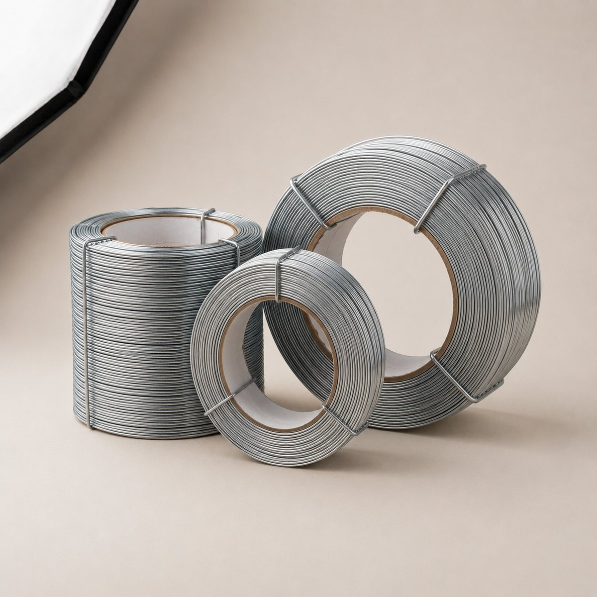

Which wire runs on your head?
Wire that breaks, drags or clinches short is usually a mismatch, not a defect. Pick your machine and the conditions the carton has to survive, and we'll give you the gauge, spool format and grade.

Every head we have supplied.
Compiled from twenty years of trial spools going out and feedback coming back. If your experience differs from this table, we would like to hear it, because it is how the table gets better.
| Make | Type | Gauge range | Spool format | Grades commonly run |
|---|---|---|---|---|
| Insun | Fully automatic box stitcher | 22–24 | 15 / 25 kg reel, 200 mm core | Rust resistant, Power G.I., brass |
| Gods Will | Semi & fully automatic | 22–25 | 15 / 25 kg reel | Full galvanised ladder |
| MEPL | Semi-automatic stitcher | 23–25 | 5 / 15 kg reel | Galvanised, rust resistant |
| Bielomatik | Book & saddle stitching line | 24–26 | 2 / 5 kg spool | Copper coated, brass, copper |
| ECH | Automatic stitcher | 22–24 | 15 kg reel | Rust resistant, Power G.I., brass |
| Joy Dzign | Semi-automatic stitcher | 23–25 | 5 / 15 kg reel | Galvanised, rust resistant |
| Manual / foot stitcher | Pedal or hand operated | 24–26 | 2 / 5 kg spool | Galvanised, copper coated, copper |
Gauge ranges are the sections we supply against these heads in practice. Always defer to your machine manual where it specifies a narrower band. All seven grades (galvanised, rust resistant, Power G.I., copper coated, stainless steel, pure brass and pure copper) are drawn to these sections; stainless steel is quoted on application, so confirm head compatibility with us before specifying it.
Before you change wire.
Will changing grade require me to reset the machine?
Not if you hold the same section. Grade changes the metal and the coating, not the thickness and width, so a head set for 23 gauge will run 23 gauge galvanised, rust resistant, Power G.I., copper coated, stainless steel, brass or copper without adjustment. Changing gauge is what requires a reset.
One caveat: brass and copper are softer than mild steel, so on an older head with a worn former you may see a slightly different clinch. Run a trial spool before you commit a shift to it.
My wire keeps snatching mid-reel. Is that the grade?
Almost never. Snatching mid-reel is a winding problem, a cross-over in the layer beneath, where the wire has bedded into the wrap below and pulls two turns at once. It shows up at the same point on every reel from a bad lot, which is the giveaway.
Check the reel for visible crossing before you blame the wire strength, and keep the spool axis square to the guide.
Can I run flat stitching wire on a book stitching line?
Yes, and internationally many binders prefer it. A narrow flat section gives a broader crown bearing on the spine than round wire of the same mass, which means less cut-through on thin cover stock and a binding that holds longer. It needs a head rated for flat wire, so check before ordering.
What spool core do the automatics take?
Most fully automatic box stitchers in Indian plants take a 200 mm core on 15 or 25 kg reels. Semi-automatics generally run 5 or 15 kg. Book lines run 2 or 5 kg spools. We supply to your core size, so tell us the internal diameter and the maximum flange your cradle accepts.